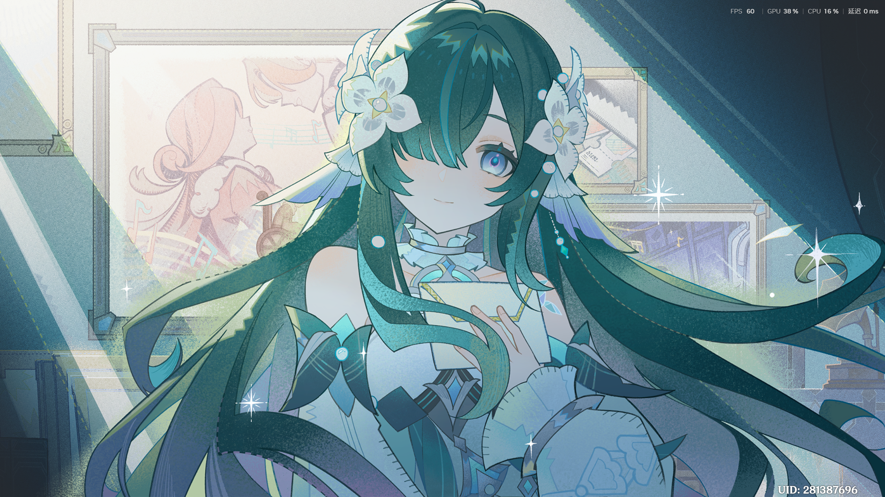

好久没写了。最近在忙两件事：把 CD 一张张抓进电脑，还有中广核的走势拟合。
CD 抓轨：给听歌站加了个「CD原声」
- 买了夜鹿（ヨルシカ）的两张专辑，用光驱逐轨抓取，直接按曲目表命名
- 《だから僕は音楽を辞めた》14 首
- 《エルマ》14 首（車窓、憂一乗、雨とカプチーノ、ノーチラス……）
- 格式都是 PCM WAV、44.1kHz、16-bit、立体声，逐轨时长校验全过，失败 0
- 在听歌站里新开了「CD原声」这个分类 —— 这里音质最好，和之前的在线音源分开放
踩的坑
- 两个同名文件夹：
だから僕は音楽を辞めた出现了两遍，肉眼看一模一样。查出来是一个文件夹名末尾多了个不可见的全角空格（U+3000），14 个文件逐一算 SHA-256 完全相同，属于纯重复，保留没空格那个 - WAV 放不了：MP3 正常、WAV 全部 404。根因不是文件坏了，是 NAS 上
N:\CD这个新目录还没挂进容器 ——cd.db在原来的挂载里所以歌能列出来，媒体却取不到。而且普通重启没用，必须在 Compose 里重建容器才会生效
量化：跳空概率 + 板块联动拟合
跳空之后通常怎么走
拿 1297 个有效交易日统计（K=4，日内走势），基准概率是：
- 窄幅横盘 43.4%
- 探底回升 28.6%
- 开盘见顶·单边下跌 19.0%
- 开盘见底·强势拉升 9.0%
按跳空分层后，低开 ≥2 tick 的日子最不一样：强势拉升的概率从 9% 抬到 17.3%，横盘概率掉到 31.6%——低开反而容易反包。
v10 / v11 / v12：把「五者」的关系理清楚
五者是：中广核 C、申万电力指数 E、电力板块多股合成 EP、沪深300 M、全市场合成 MP。做法上定了几条我觉得挺关键的规矩：
- EP / MP 的主状态变量直接用连续状态分布 π_t，不再拿它做二次 KMeans（免得信息被切碎）
- 不搞「每个组合只挑最好的那个」，K=4~6、N=3..30 全部保留，后面按方向一致性和显著比例汇总
- 所有阈值只用 TRAIN 算（P90/P95/P97.5），VALID 只应用冻结阈值 —— 区分了「参数泄漏」和「时间可获得性泄漏」两回事
- 关系分析用正交化三步：A. 中广核状态对全市场回归取残差，看电力有没有解释力；B. 中广核 ~ 电力取残差，看全市场有没有解释力；C. 两者一起进回归，比较系数和显著性（电力显著、全市场不显著 → 说明电力板块的信息是独立的）
- 另外还做了状态转移和拐点同步（看日内/日间的拐点是否同步，而不是简单算领先滞后天数）
第一批 v10 / v11 / v12 结果已经落盘，接下来按方向一致性和效应量汇总。
